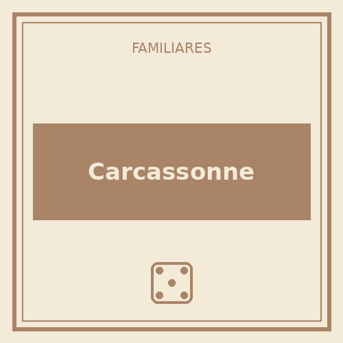
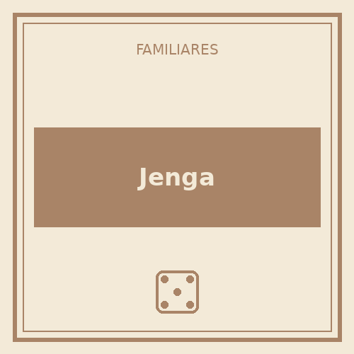
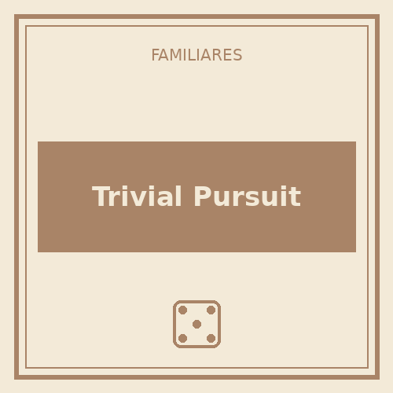

Carcassonne
2-5 jugadores · 35-45 min
Se arma el mapa a medida que se juega, colocando fichas de terreno como en un rompecabezas. Reglas fáciles de explicar y partidas cortas, perfecto para jugar en familia.
Descargar reglamento (PDF)Ideales para jugar todos juntos, de chicos a grandes.

2-5 jugadores · 35-45 min
Se arma el mapa a medida que se juega, colocando fichas de terreno como en un rompecabezas. Reglas fáciles de explicar y partidas cortas, perfecto para jugar en familia.
Descargar reglamento (PDF)
1-8 jugadores · 10-20 min
El clásico de destreza y pulso firme. No hace falta saber leer para jugarlo, así que es de los favoritos con los más chicos de la casa.
Descargar reglamento (PDF)
2-6 jugadores (o equipos) · 60-90 min
El juego de preguntas y respuestas por excelencia. Se puede jugar en equipos para nivelar edades y conocimientos, ideal para una tarde familiar larga.
Descargar reglamento (PDF)